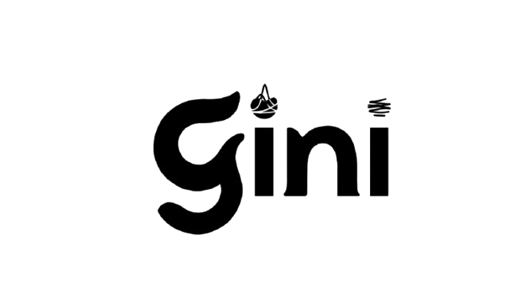

It is not one appointment, one lab result, one symptom, or one doctor. Yet that is how the system still works. Here is what we believe, and what we are building.
Women's health is not one specialty.
It is not one appointment. Not one lab result. Not one symptom. Not one doctor. But that is how the system still works.
A woman feels off. She is tired. Her cycle changes, her skin changes, her weight changes. Her pain gets worse. Her mood shifts. Her body is trying to say something.
The system answers with fragments.
And still, too often, no one sees the full picture.
This is not rare. This is routine. PCOS affects an estimated 10–13% of reproductive-age women, and up to 70% may still be undiagnosed. Nearly half see at least three professionals before they get an answer, and one in three wait more than two years.
Endometriosis affects about 1 in 10 women. Diagnosis can take 5.4 to 11.4 years, and recent UK surveys put the average wait at more than 9 years. In England's national survey, more than 4 in 5 women said there were times they were not listened to.
That is years of pain. Years of doubt. Years of second-guessing your own body.
Women do not need one more app that tracks one more thing. They need a system that sees the whole story.
Gini is the comprehensive layer for women's health.
A place where blood work is only the beginning. Where your cycle matters. Your symptoms matter. Your sleep, your temperature, your heart rate, your history. What one doctor wrote last year should still matter this year.
Because women's health is connected.
The cycle is a vital sign. Hormones do not stay in one lane. Pain does not stay in one lane. Metabolism does not stay in one lane. Fertility does not stay in one lane. So care should not stay in one lane either.
In oncology, the hardest cases are reviewed by specialists together. Women's health deserves that same standard.
Gini is built to be that layer. The case conference for women's health. The connective tissue between symptoms, signals, and specialists, where data becomes context, and context becomes action.
Not more noise. Not more self-diagnosis. Not more tabs open at 2 a.m. A clearer path. A smarter starting point. A better handoff. A faster route to the right care.
We believe the future of care will not be built around isolated visits. It will be built around continuous understanding. Telehealth changed access; the next era is about intelligence. But convenience alone is not enough. Women deserve something better than a chatbot with confidence and no memory.
They deserve a system that listens. A system that learns. A system that organizes the evidence and helps good clinicians move earlier and see more clearly.
That is what Gini is for.
To shorten the road to answers. To reduce the number of times women have to start over. To turn scattered signals into one living health picture, and make women's health feel less like a maze and more like medicine.
Clarity, continuity, and the feeling that someone is finally looking at the whole body, not just one piece of it.
This is not just about better diagnostics. It is about better care design, giving women one place where their data is respected, their story is not lost, and their health is finally treated as connected. The privacy bar has to be high, because women's health data is deeply personal.
We are building Gini for the woman who is tired of stitching the system together herself. For the woman who has been told to wait. For the woman who has been told it is normal. For the woman who knows it is not.
Women's health should not take years to understand. We are here to change that.
Get early access ↗